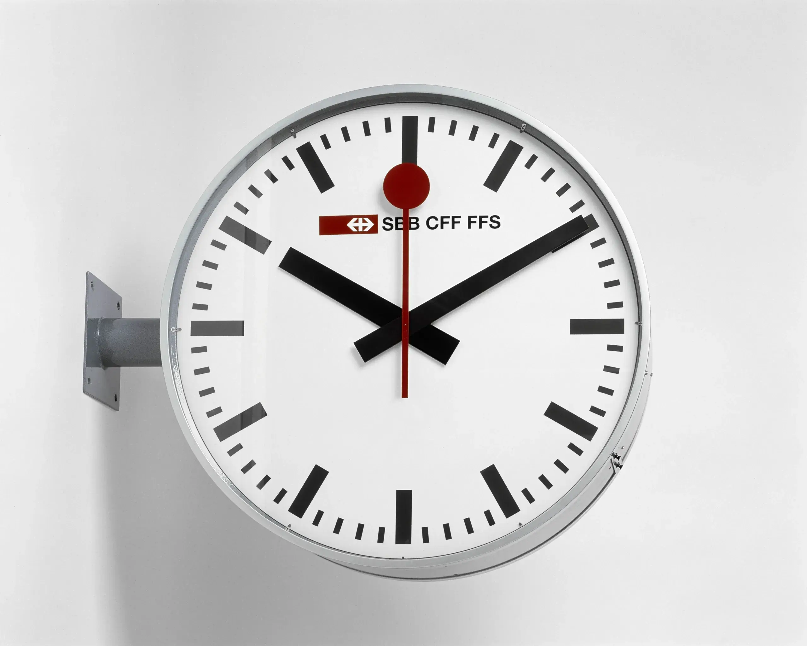
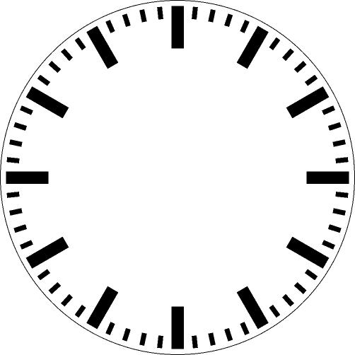
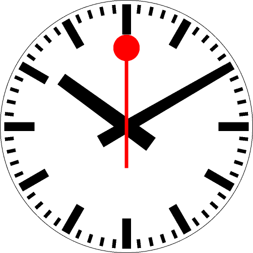
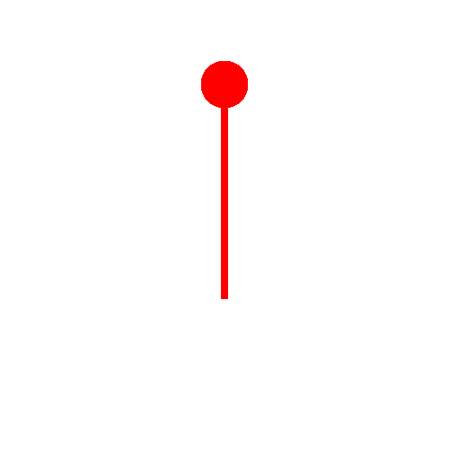

einkaufsliste = ['Brot', 'Milch']
einkaufsliste['Brot', 'Milch']Bisher hat jede Variable auf genau einen Wert verwiesen: eine Zahl, einen String oder eine Grafik. Mit der Python-Liste lernen wir in diesem Kapitel eine erste Datenstruktur kennen. Eine Datenstruktur fasst mehrere Werte nach einem bestimmten Ordnungsprinzip zusammen, bei der Liste in einer festen Reihenfolge, und ermöglicht es, diese Werte gezielt anzusprechen und zu bearbeiten.
Bearbeitet werden Listen einerseits mit eingebauten Funktionen wie len() und mit Operatoren wie [], andererseits mit sogenannten Methoden. Methoden sind Funktionen, die zu einem bestimmten Datentyp gehören und mit einem Punkt direkt auf einem Wert aufgerufen werden, z. B. einkaufsliste.append('Brot'). Im Unterschied zu den bisher verwendeten Funktionen verändern viele Listenmethoden die Liste direkt, statt ein neues Resultat zurückzugeben.
Das Kapitel führt in drei Etappen von den Grundlagen zu einem grösseren Projekt. Zuerst lernen wir, wie Listen angelegt, gefüllt, durchlaufen und ausgewertet werden. Danach sehen wir, dass eine Animation nichts anderes ist als eine Liste von Grafiken. Mit diesem Wissen bauen wir schliesslich zwei Animationen mit PyTamaro: einen PacMan, der den Mund auf- und zuklappt, und als Abschlussübung die Bahnhofsuhr der SBB.
Zunächst aber ein Blick darauf, wie eine Liste im Arbeitsspeicher aufgebaut ist.
Was ist ein Array?
Ein Array ist eine der grundlegendsten Datenstrukturen der Informatik. Man kann es sich wie eine Reihe von nummerierten Schliessfächern vorstellen, die lückenlos nebeneinander im Arbeitsspeicher liegen. Alle Fächer sind gleich gross, und jedes hat eine Nummer, den sogenannten Index.
Weil die Fächer lückenlos aneinandergereiht und gleich gross sind, kann der Computer die Position jedes Fachs direkt berechnen:
Position = Anfang des Arrays + Index · Grösse eines Fachs
Der Computer muss also nicht alle Fächer der Reihe nach durchsuchen, um das gewünschte zu finden. Der Zugriff auf das tausendste Element dauert gleich lang wie der Zugriff auf das erste. Diese Berechnung erklärt übrigens auch, weshalb in Python mit 0 zu zählen begonnen wird: Der Index gibt an, wie viele Fächer vom Anfang aus übersprungen werden. Das erste Element liegt direkt am Anfang, also bei Index 0.
Das Problem: Ein Array hat eine feste Grösse
Ein klassisches Array wird mit einer festen Anzahl Fächer angelegt. Ist es voll, kann es nicht einfach verlängert werden, denn der Speicherplatz direkt dahinter ist möglicherweise bereits anderweitig belegt.
Die Lösung: Das dynamische Array
Python löst dieses Problem mit einem Trick. Beim Anlegen einer Liste reserviert Python etwas mehr Fächer, als im Moment gebraucht werden. Neue Elemente können so am Ende einfach in ein freies Fach gelegt werden. Erst wenn alle reservierten Fächer belegt sind, sucht Python einen neuen, grösseren Speicherbereich, kopiert alle bisherigen Elemente dorthin und gibt den alten Bereich frei. Für uns geschieht das unsichtbar: Die Liste scheint einfach beliebig wachsen zu können. Deshalb spricht man von einem dynamischen Array.
Was das für die Praxis bedeutet
liste[5]) ist immer schnell, egal wie lang die Liste ist.liste.append(x)) ist in aller Regel schnell.Warum dieser Unterschied wichtig ist, wird beim Thema Beurteilung von Algorithmen noch genauer betrachtet.
Eine Zahl braucht weniger Speicherplatz als ein langer Text. Wie passt das zu gleich grossen Fächern? In den Fächern einer Python-Liste liegen nicht die Werte selbst, sondern Verweise auf die Orte im Arbeitsspeicher, an denen die Werte abgelegt sind, genau wie bei Variablen. Alle Verweise sind gleich gross, unabhängig davon, worauf sie zeigen. Deshalb kann eine Liste problemlos Zahlen, Strings und sogar PyTamaro-Grafiken gleichzeitig enthalten.
.append()Eine Liste wird mit eckigen Klammern angelegt. Die einzelnen Elemente werden durch Kommas getrennt.
einkaufsliste = ['Brot', 'Milch']
einkaufsliste['Brot', 'Milch']Häufig steht beim Anlegen einer Liste noch nicht fest, welche Elemente sie später enthalten soll. Eine Liste kann deshalb auch leer angelegt und anschliessend schrittweise gefüllt werden. Dafür stellt Python die Methode .append() zur Verfügung. Sie hängt das als Argument übergebene Element am Ende der Liste an.
einkaufsliste.append('Käse')
einkaufsliste['Brot', 'Milch', 'Käse']Beachten Sie die Schreibweise: Die Methode wird mit einem Punkt direkt an den Namen der Liste angehängt. Damit ist klar, welche Liste verändert werden soll.
.append() verändert die Liste direkt
Bei PyTamaro haben Sie sich daran gewöhnt, das Resultat einer Funktion einer Variablen zuzuweisen:
blume = kombiniere(blume, bluetenblatt_gedreht)kombiniere() verändert die bestehende Grafik nicht, sondern erstellt eine neue. Diese muss deshalb in einer Variablen gespeichert werden.
.append() funktioniert anders: Die Methode verändert die bestehende Liste direkt und gibt kein Resultat zurück, genauer gesagt den speziellen Wert None (engl. für nichts). Wer das Muster von PyTamaro überträgt, verliert seine Liste. Das folgende Beispiel verwendet dafür eine eigene Liste, damit die Einkaufsliste für die weiteren Beispiele erhalten bleibt:
vorraete = ['Reis', 'Mehl']
vorraete = vorraete.append('Zucker') # FALSCH!
print(vorraete)NoneDie Variable vorraete verweist jetzt nicht mehr auf die Liste, sondern auf None. Richtig ist deshalb immer:
vorraete.append('Zucker') # richtig: ohne ZuweisungBesonders nützlich wird .append() in Kombination mit einer For-Schleife. Im folgenden Beispiel wird eine leere Liste angelegt und in jedem Schleifendurchlauf um eine Quadratzahl ergänzt.
quadratzahlen = []
for zahl in range(1, 6):
quadratzahlen.append(zahl ** 2)
quadratzahlen[1, 4, 9, 16, 25]# TODO: Legen Sie eine leere Liste an und füllen Sie sie mit einer
# For-Schleife mit allen Vielfachen von 7 zwischen 7 und 70.
vielfache = []
for zahl in range(7, 71, 7):
vielfache.append(zahl)
vielfache[7, 14, 21, 28, 35, 42, 49, 56, 63, 70]Bisher haben wir For-Schleifen ausschliesslich mit range() verwendet. Eine For-Schleife kann aber auch über eine Liste laufen. Die Schleifenvariable nimmt dabei in jedem Durchlauf der Reihe nach den Wert des nächsten Elements an. Man sagt, die Schleife iteriert über die Liste.
for artikel in einkaufsliste:
print(artikel)Brot
Milch
KäseDas ist kein Sonderfall: Auch range(5) liefert der Schleife einfach der Reihe nach die Werte 0, 1, 2, 3 und 4. Eine Liste liefert stattdessen ihre Elemente. Man spricht daher von einem iterable.
Python ist es gleichgültig, wie die Schleifenvariable heisst. Für Menschen, die den Code lesen, macht der Name dagegen einen grossen Unterschied. Es haben sich deshalb die folgenden Konventionen eingebürgert:
farben, zahlen, namen. Alternativ kann ein Sammelbegriff verwendet werden, wie bei einkaufsliste.for farbe in farben, for zahl in zahlen, for name in namen.i werden nur für Zähler verwendet, also wenn die Schleife mit range() über Zahlen läuft, die eine Position oder eine Anzahl Wiederholungen bezeichnen. Diese Konvention stammt aus der Mathematik, wo i traditionell für einen Index steht.Vergleichen Sie die beiden folgenden Schleifen. Sie tun genau dasselbe, aber nur bei der zweiten ist auf den ersten Blick klar, was passiert.
for i in x:
print(i)
for artikel in einkaufsliste:
print(artikel)Gut gewählte Namen machen den Code fast zu einem lesbaren Satz: Für jeden Artikel in der Einkaufsliste: gib den Artikel aus.
list() und mit Listen rechnenlist()Im Abschnitt über For-Schleifen haben wir gesehen, dass range() der Schleife der Reihe nach Zahlen liefert. Eine Liste ist das Ergebnis von range() allerdings nicht:
range(5)
range(0, 5)Python zeigt nicht die Zahlen 0 bis 4 an, sondern nur range(0, 5). Ein range erzeugt die Zahlen erst dann, wenn sie gebraucht werden, zum Beispiel in einer For-Schleife. Das spart Speicherplatz, bedeutet aber auch: Mit einem range lassen sich viele Listenoperationen nicht durchführen.
Die Funktion list() löst dieses Problem. Sie nimmt als Argument eine Folge von Werten entgegen und erzeugt daraus eine Liste:
list(range(5))
[0, 1, 2, 3, 4]
list(range(60, 55, -1))
[60, 59, 58, 57, 56]list() funktioniert nicht nur mit range, sondern mit allem, über das eine For-Schleife laufen kann. Ein String ist zum Beispiel eine Folge von Zeichen:
list('Hallo')['H', 'a', 'l', 'l', 'o']Ohne Argument erzeugt list() eine leere Liste. list() und [] bedeuten also dasselbe.
Für Listen stellt Python verschiedene Operatoren und eingebaute Funktionen zur Verfügung. Die folgenden Beispiele verwenden diese Liste:
zahlen = [3, 1, 4, 1, 5]
Zugriff über den Index
Mit eckigen Klammern wird ein einzelnes Element angesprochen. Wie in der INFO-Box zu den Arrays erklärt, beginnt die Zählung bei 0. Negative Indizes zählen vom Ende her: -1 ist das letzte Element.
print(zahlen[0])
print(zahlen[-1])
3
5Mit einem Doppelpunkt wird ein Ausschnitt (engl. slice) erzeugt. Wie bei range() ist der Startwert eingeschlossen, der Endwert nicht.
zahlen[1:3][1, 4]Listen verbinden mit +
Der Operator + hängt zwei Listen aneinander und erzeugt daraus eine neue Liste. Die ursprünglichen Listen bleiben unverändert.
[1, 2] + [3, 4, 5][1, 2, 3, 4, 5]Damit lassen sich auch zwei range zu einer einzigen Liste verbinden. Weil + nur mit Listen funktioniert, müssen beide zuerst mit list() umgewandelt werden:
hin_und_zurueck = list(range(5)) + list(range(5, 0, -1))
hin_und_zurueck[0, 1, 2, 3, 4, 5, 4, 3, 2, 1]Diese Verbindung zweier range wird uns beim animierten PacMan wieder begegnen.
Beide Seiten von + müssen Listen sein. [1, 2] + 3 führt zu einem Fehler, richtig ist [1, 2] + [3].
Listen vervielfachen mit *
Der Operator * wiederholt eine Liste. Das ist praktisch, um eine Liste mit lauter gleichen Startwerten anzulegen.
[0] * 5[0, 0, 0, 0, 0]Prüfen mit in und not in
Der Operator in prüft, ob ein Wert in der Liste vorkommt. Das Ergebnis ist ein Wahrheitswert (True oder False) und kann deshalb direkt in einer Bedingung verwendet werden.
print(4 in zahlen)
print(7 in zahlen)
print(7 not in zahlen)True
False
TrueEingebaute Funktionen
| Funktion | Bedeutung | Beispiel | Ergebnis |
|---|---|---|---|
len() |
Anzahl Elemente | len(zahlen) |
5 |
sum() |
Summe aller Elemente | sum(zahlen) |
14 |
min() |
kleinstes Element | min(zahlen) |
1 |
max() |
grösstes Element | max(zahlen) |
5 |
sorted() |
sortierte Kopie der Liste | sorted(zahlen) |
[1, 1, 3, 4, 5] |
sum() funktioniert nur, wenn alle Elemente Zahlen sind. min(), max() und sorted() funktionieren auch mit Strings. Dann wird alphabetisch verglichen.
Die Operatoren und Funktionen in diesem Abschnitt verändern die ursprüngliche Liste nicht. Sie erzeugen ein neues Ergebnis, das einer Variablen zugewiesen werden muss, wenn man es weiterverwenden will. Sie verhalten sich also wie die PyTamaro-Funktionen:
sortiert = sorted(zahlen) # zahlen bleibt unverändertMethoden wie .append() dagegen verändern die Liste direkt und geben None zurück. Achten Sie deshalb immer darauf, ob Sie mit einer Funktion oder mit einer Methode arbeiten. Zu erkennen ist der Unterschied daran, ob die Variable, welche die Liste bezeichnet, als Argument übergeben wird, oder ob die Methode mit einem Punkt an die Variable angehängt wird.
Mit Listen, For-Schleifen und .append() sind alle Werkzeuge beisammen, um Grafiken in Bewegung zu versetzen. Zuerst klären wir aber, wie Bewegung auf einem Bildschirm überhaupt entsteht.
Vielleicht haben Sie als Kind einmal ein Daumenkino gebastelt: Auf jede Seite eines kleinen Blocks wird ein Bild gezeichnet, das sich vom vorherigen nur ein wenig unterscheidet. Lässt man die Seiten schnell unter dem Daumen durchblättern, scheint sich die Figur zu bewegen.
Der Trick beruht auf unserer Wahrnehmung: Folgen Einzelbilder schnell genug aufeinander (ab etwa 10 bis 15 Bildern pro Sekunde), verbindet unser Gehirn sie zu einer flüssigen Bewegung. Nach genau diesem Prinzip funktionieren auch Kinofilme (24 Bilder pro Sekunde), Videos und Computerspiele. Die Anzahl Bilder pro Sekunde nennt man Bildrate (engl. frame rate, abgekürzt fps für frames per second).
GIF steht für Graphics Interchange Format. Es ist ein Dateiformat für Bilder, das bereits 1987 entwickelt wurde und bis heute weit verbreitet ist. Eine GIF-Datei kann nicht nur ein einzelnes Bild enthalten, sondern mehrere Bilder hintereinander. Ein animiertes GIF ist deshalb nichts anderes als ein digitales Daumenkino. In der Datei sind gespeichert:
Weil jeder Browser GIFs ohne Zusatzprogramm abspielen kann, werden sie gerne für kurze Animationen, Sticker und Memes verwendet. Ein Nachteil: Ein GIF kann höchstens 256 verschiedene Farben darstellen. Für Fotos und lange Videos sind andere Formate besser geeignet, für einfache Grafiken wie unsere reicht es aber gut.
Für PyTamaro ist ein Daumenkino einfach eine Liste von Grafiken. Die Funktion zeige_animation() nimmt eine solche Liste entgegen und spielt die Grafiken der Reihe nach im Notebook ab.
zeige_animation(grafiken, dauer, loop)| Parameter | Bedeutung | Standardwert |
|---|---|---|
grafiken |
Liste der Einzelbilder, in der Reihenfolge, in der sie gezeigt werden | – |
dauer |
Wie viele Millisekunden jedes Einzelbild angezeigt wird | 40 |
loop |
True: Die Animation beginnt endlos von vorne. False: Sie läuft einmal ab. |
True |
Nur grafiken muss angegeben werden. Wird dauer weggelassen, zeigt PyTamaro jedes Bild 40 Millisekunden lang. Das ergibt 1000 / 40 = 25 Bilder pro Sekunde, ungefähr die Bildrate eines Kinofilms.
dauer |
Bilder pro Sekunde | Wirkung |
|---|---|---|
40 |
25 | flüssig |
100 |
10 | leicht ruckelnd |
500 |
2 | Diashow |
Die Argumente können auch mit ihrem Namen übergeben werden, z. B. zeige_animation(bilder, dauer=50). Das macht den Code leichter lesbar. In den folgenden Übungen wird diese Schreibweise teilweise verwendet.
Das folgende Beispiel zeigt einen Kreis, der wächst:
from pytamaro.de import *
hintergrund = rechteck(120, 120, weiss)
bilder = []
for durchmesser in range(10, 110, 10):
kreis = ellipse(durchmesser, durchmesser, rot)
bild = kombiniere(kreis, hintergrund)
bilder.append(bild)
zeige_animation(bilder, 100)<IPython.core.display.Image object>Das Vorgehen ist immer dasselbe:
.append() anhängen.zeige_animation() übergeben.Soll die Animation als Datei gespeichert werden, etwa um sie zu verschicken oder auf einer Webseite zu verwenden, steht speichere_animation() zur Verfügung. Sie funktioniert gleich, verlangt aber zusätzlich als erstes Argument einen Dateinamen, der auf .gif enden muss:
speichere_animation('kreis.gif', bilder, 100)Alle Einzelbilder müssen gleich gross sein. Andernfalls erscheint die Meldung Alle Grafiken in der Liste müssen die gleiche Größe haben. Ein Daumenkino hat schliesslich auch lauter gleich grosse Seiten. Im Beispiel oben sorgt der weisse Hintergrund dafür: Der Kreis wächst, das Bild nicht.
Die Liste darf nicht leer sein. Die Meldung Die Liste der Grafiken darf nicht leer sein bedeutet meist, dass .append() in der Schleife vergessen ging oder falsch eingerückt ist.
dauer muss eine ganze Zahl sein. zeige_animation(bilder, 1000 / 12) führt zu einem Fehler, weil / immer eine Dezimalzahl ergibt. Richtig ist zeige_animation(bilder, 83) oder zeige_animation(bilder, 1000 // 12).
Als erste Anwendung bauen wir einen PacMan, der an Ort bleibt und dabei den Mund auf- und zuklappt.
Wir gehen in zwei Schritten vor: Zuerst zeichnen wir einen einzelnen, statischen PacMan. Anschliessend erzeugen wir daraus nach dem beschriebenen Muster (leere Liste, Schleife, .append()) die Einzelbilder der Animation.
# Stellt sicher, dass alle deutschen PyTamaro-Funktionen zur Verfügung stehen
from pytamaro.de import *Der Körper des PacMan ist ein Kreissektor, dem ein Stück fehlt: der Mund. Ein Sektor von 300° lässt eine Lücke von 60°, die mit drehe() so ausgerichtet wird, dass der Mund nach rechts zeigt. Ein transparenter Kreis als Hintergrund sorgt dafür, dass das Bild, bzw. dessen Bounding-Box, immer gleich gross ist, egal wie weit der Mund offen steht. Das wird im zweiten Schritt wichtig, denn alle Einzelbilder einer Animation müssen gleich gross sein. Zuletzt wird das Auge mit einem transparenten Positionshalter an die richtige Stelle gesetzt.
In der folgenden Code-Zelle wird ein PacMan mit aufgesperrtem Mund gezeichnet.
# TODO: Zeichne einen statischen PacMan
hintergrund = ellipse(80, 80, transparent)
pacman = kreis_sektor(40, 300, gelb)
pacman = drehe(30, pacman)
pacman = fixiere(mitte_links, pacman)
hintergrund = fixiere(mitte_links, hintergrund)
pacman = kombiniere(pacman, hintergrund)
auge = ellipse(10, 10, schwarz)
auge_positionshalter = rechteck(30, 20, transparent)
auge_positionshalter = fixiere(unten_links, auge_positionshalter)
auge = kombiniere(auge, auge_positionshalter)
auge = fixiere(oben_rechts, auge)
pacman = fixiere(oben_rechts, pacman)
pacman = kombiniere(auge, pacman)
zeige_grafik(pacman)
speichere_grafik('pacman.png', pacman)Für die Animation braucht es eine Liste von PacMan-Bildern mit unterschiedlich weit geöffnetem Mund. Der Öffnungswinkel winkel soll von 0° auf 60° anwachsen und danach wieder auf 0° zurückgehen. Genau dafür eignet sich die Verbindung zweier range mit +, wie sie im Abschnitt Operationen mit Listen gezeigt wurde. In jedem Schleifendurchlauf wird ein Kreissektor von 360 - winkel Grad gezeichnet und um winkel / 2 gedreht, damit der Mund symmetrisch nach rechts geöffnet ist. Alles, was sich von Bild zu Bild nicht verändert (Hintergrund und Auge), wird einmal vor der Schleife erstellt.
Die Liste enthält 120 Bilder. Bei der Standarddauer von 40 Millisekunden pro Bild dauert ein Auf- und Zuklappen 4,8 Sekunden.
# TODO: Erstelle einen animierten PacMan
pacmen = []
hintergrund = ellipse(80, 80, transparent)
hintergrund = fixiere(mitte_links, hintergrund)
auge = ellipse(10, 10, schwarz)
auge_positionshalter = rechteck(30, 20, transparent)
auge_positionshalter = fixiere(unten_links, auge_positionshalter)
auge = kombiniere(auge, auge_positionshalter)
auge = fixiere(oben_rechts, auge)
winkel_liste = list(range(60)) + list(range(60, 0, -1))
for winkel in winkel_liste:
pacman = kreis_sektor(40, 360-winkel, rot)
pacman = drehe(winkel/2, pacman)
pacman = fixiere(mitte_links, pacman)
pacman = kombiniere(pacman, hintergrund)
pacman = fixiere(oben_rechts, pacman)
pacman = kombiniere(auge, pacman)
pacmen.append(pacman)
zeige_animation(pacmen)
speichere_animation('pacman.gif', pacmen)<IPython.core.display.Image object>Zum Abschluss setzen wir alles Gelernte in einem grösseren Projekt ein. Die Bahnhofsuhr der SBB ist eine Schweizer Design-Ikone.

Entworfen wurde sie von Hans Hilfiker (1901 - 1993). Die genauen Dimensionen der einzelnen Merkmale der Uhr finden sich in der untenstehenden Skizze. Alle Masse sind als Vielfache einer Einheit a angegeben, die einem Hundertstel des Durchmessers entspricht. Wählen wir a = 5, wird die Uhr 500 Pixel gross.
Die Uhr besteht aus den folgenden Elementen:
Wir konstruieren die Elemente zuerst einzeln, setzen sie dann zu einer statischen Uhr zusammen und bringen diese schliesslich mit Animationen zum Laufen.
Der Hintergrund besteht aus einem weissen Kreis mit 100a Durchmesser, der auf einen minimal grösseren schwarzen Kreis gelegt wird. So entsteht der Rahmen.
Für die Striche nutzen wir einen Trick: Jeder Strich wird über einen transparenten Abstandhalter gesetzt, sodass Strich und Abstandhalter zusammen genau den Radius von 48,5a abdecken. Wird diese Grafik in unten_mitte fixiert, liegt der Fixierpunkt in der Mitte der Uhr, und drehe() dreht den Strich um die Uhrmitte.
Hier kommen die Listen ins Spiel: Eine erste Schleife erzeugt die 12 Stundenstriche (alle 30°) bzw. die 60 Minutenstriche (alle 6°) und sammelt sie in einer Liste. Eine zweite Schleife iteriert über diese Liste und fügt jeden Strich zur Grafik hinzu. Ausgangspunkt ist dabei leere_grafik(), die für Grafiken die Rolle übernimmt, die [] für Listen spielt.
# TODO: Konstruktion Zifferblatt
a = 5
hintergrund = ellipse(100*a, 100*a, weiss)
rand = ellipse(100*a+2, 100*a+2, schwarz)
hintergrund = ueberlagere(hintergrund, rand)
stunde = rechteck(3.5*a, 12*a, schwarz)
abstandhalter_stunde = rechteck(3.5*a, (48.5-12)*a, transparent)
stunde = ueber(stunde, abstandhalter_stunde)
stunde = fixiere(unten_mitte, stunde)
minute = rechteck(1.4*a, 3.5*a, schwarz)
abstandhalter_minute = rechteck(1.4*a, (48.5-3.5)*a, transparent)
minute = ueber(minute, abstandhalter_minute)
minute = fixiere(unten_mitte, minute)
stunden = []
for i in range(0, 360, 30):
strich = drehe(i, stunde)
stunden.append(strich)
stundenstriche = leere_grafik()
for stunde in stunden:
stundenstriche = kombiniere(stundenstriche, stunde)
minuten = []
for i in range(0, 360, 6):
strich = drehe(i, minute)
minuten.append(strich)
minutenstriche = leere_grafik()
for minute in minuten:
minutenstriche = kombiniere(minutenstriche, minute)
zifferblatt = ueberlagere(stundenstriche, hintergrund)
zifferblatt = ueberlagere(minutenstriche, zifferblatt)
zeige_grafik(zifferblatt)
speichere_grafik('zifferblatt.png', zifferblatt)
Die beiden Zeiger sind keine Rechtecke, sondern werden zur Spitze hin schmaler. Gemäss Skizze ist der Minutenzeiger an der Spitze 3,6a und am hinteren Ende 5,2a breit; vom Drehpunkt aus ragt er 46a nach vorn und 12a nach hinten. Der Stundenzeiger ist 5,2a bzw. 6,4a breit und ragt 32a nach vorn und 12a nach hinten.
Jeder Zeiger wird deshalb aus zwei Trapezen zusammengesetzt, die im Drehpunkt aneinanderstossen. Zuerst wird berechnet, wie breit der Zeiger an dieser Stelle ist. Jedes Trapez entsteht dann aus einem Rechteck, an das links und rechts ein schmales rechtwinkliges Dreieck angesetzt wird. Das vordere Trapez wird in unten_mitte, das hintere in oben_mitte fixiert. Beim Kombinieren treffen sich die beiden Fixierpunkte, sodass der fertige Zeiger im Drehpunkt fixiert ist.
# TODO: Konstruiere Minuten- und Stundenzeiger
# Minutenzeiger: Spitze 3.6a, Ende 5.2a, vorn 46a, hinten 12a
m_breite_mitte = 3.6*a + (5.2*a - 3.6*a) * 46 / 58 # Breite beim Drehpunkt
# vorderes Trapez (46a lang, oben 3.6a, unten m_breite_mitte)
d = (m_breite_mitte - 3.6*a) / 2
m_vorn = neben(drehe(90, dreieck(46*a, d, 90, schwarz)),
neben(rechteck(3.6*a, 46*a, schwarz), dreieck(d, 46*a, 90, schwarz)))
m_vorn = fixiere(unten_mitte, m_vorn)
# hinteres Trapez (12a lang, oben m_breite_mitte, unten 5.2a)
d = (5.2*a - m_breite_mitte) / 2
m_hinten = neben(drehe(90, dreieck(12*a, d, 90, schwarz)),
neben(rechteck(m_breite_mitte, 12*a, schwarz), dreieck(d, 12*a, 90, schwarz)))
m_hinten = fixiere(oben_mitte, m_hinten)
minutenzeiger = kombiniere(m_vorn, m_hinten)
# Stundenzeiger: Spitze 5.2a, Ende 6.4a, vorn 32a, hinten 12a
s_breite_mitte = 5.2*a + (6.4*a - 5.2*a) * 32 / 44
d = (s_breite_mitte - 5.2*a) / 2
s_vorn = neben(drehe(90, dreieck(32*a, d, 90, schwarz)),
neben(rechteck(5.2*a, 32*a, schwarz), dreieck(d, 32*a, 90, schwarz)))
s_vorn = fixiere(unten_mitte, s_vorn)
d = (6.4*a - s_breite_mitte) / 2
s_hinten = neben(drehe(90, dreieck(12*a, d, 90, schwarz)),
neben(rechteck(s_breite_mitte, 12*a, schwarz), dreieck(d, 12*a, 90, schwarz)))
s_hinten = fixiere(oben_mitte, s_hinten)
stundenzeiger = kombiniere(s_vorn, s_hinten)Der Sekundenzeiger besteht aus einem schmalen roten Schaft mit einer runden Scheibe am vorderen Ende. Weil er an die Signalkelle erinnert, mit der das Bahnpersonal Züge zur Abfahrt freigibt, wird er oft Kelle genannt. Der Schaft ist 1,4a breit und ragt 31,2a bis zum Mittelpunkt der Kelle nach vorn und 16,5a nach hinten. Die Kelle hat einen Durchmesser von 10,5a. Auch dieser Zeiger wird so zusammengesetzt, dass sein Fixierpunkt im Drehpunkt liegt.
# TODO: Konstruiere Sekundenzeiger
spitze = ellipse(10.5*a, 10.5*a, rot)
schaft_vorn = rechteck(1.4*a, 31.2*a, rot)
schaft_vorn = fixiere(oben_mitte, schaft_vorn)
schaft_mit_spitze = kombiniere(spitze, schaft_vorn)
schaft_mit_spitze = fixiere(unten_mitte, schaft_mit_spitze)
schaft_hinten = rechteck(1.4*a, 16.5*a, rot)
schaft_hinten = fixiere(oben_mitte, schaft_hinten)
sekundenzeiger = kombiniere(schaft_mit_spitze, schaft_hinten)
zeige_grafik(sekundenzeiger)Bevor sich etwas bewegt, prüfen wir, ob alle Teile zusammenpassen. Weil die Zeiger im Drehpunkt und das Zifferblatt in seiner Mitte fixiert sind, genügt kombiniere(), um sie deckungsgleich übereinanderzulegen. Die Reihenfolge bestimmt, was vorne liegt: zuvorderst der Sekundenzeiger, dahinter Minuten- und Stundenzeiger, zuhinterst das Zifferblatt.
Zu beachten ist die Drehrichtung: In PyTamaro dreht ein positiver Winkel eine Grafik im Gegenuhrzeigersinn. Für eine Drehung im Uhrzeigersinn braucht es deshalb negative Winkel. Im Beispiel zeigt die Uhr ungefähr zehn nach zehn: Der Minutenzeiger wird um 60° im Uhrzeigersinn gedreht (-60), der Stundenzeiger steht kurz nach der Zehn, also gut 50° links von der Zwölf (54).
# TODO: Kombiniere die einzelnen Elemente zu einer Uhr (10:10)
zehn_uhr = drehe(54, stundenzeiger)
zehn_nach = drehe(-60, minutenzeiger)
uhrzeit = kombiniere(zehn_nach, zehn_uhr)
uhrzeit = kombiniere(sekundenzeiger, uhrzeit)
uhrzeit = kombiniere(uhrzeit, zifferblatt)
zeige_grafik(uhrzeit)
Die drei Zeiger der SBB-Uhr bewegen sich in unterschiedlichem Takt. Minuten- und Stundenzeiger springen einmal pro Minute: Auf einen elektrischen Impuls hin rückt der Minutenzeiger um 6° und der Stundenzeiger um 0,5° weiter. Der Sekundenzeiger dagegen dreht sich in 58,5 Sekunden fliessend einmal um das Zifferblatt und wartet dann 1,5 Sekunden auf der Zwölf auf den nächsten Minutenimpuls.
Eine einzige Animation für alle drei Zeiger wäre deshalb riesig: Für eine flüssige Bewegung braucht der Sekundenzeiger 20 Bilder pro Sekunde, über einen Zwölfstundenumlauf ergäbe das über 860 000 Bilder. Wir erzeugen deshalb zwei getrennte Animationen, eine für den Sekundenzeiger und eine für Minuten- und Stundenzeiger, und legen sie erst im Browser über das Zifferblatt.
Damit alle Bilder später deckungsgleich übereinanderliegen, wird jedes Einzelbild mit einem transparenten Hintergrund von der Grösse des Zifferblatts (100a × 100a) kombiniert. Gleichzeitig ist damit die Bedingung erfüllt, dass alle Bilder einer Animation gleich gross sein müssen.
Die Animation des Sekundenzeigers dauert genau eine Minute und besteht aus 1200 Bildern à 50 Millisekunden. Für die Umdrehung in 58,5 Sekunden sind 1170 Bilder nötig; von Bild zu Bild dreht sich der Zeiger um 360° / 1170 weiter. Für den Halt von 1,5 Sekunden wird anschliessend 30-mal dasselbe Bild mit dem Zeiger auf der Zwölf angehängt.
# TODO: Sekundenzeiger animieren
sekunden = []
hintergrund_transparent = ellipse(100*a, 100*a, transparent)
for i in range(1170):
sekunde = drehe(-i * 360 / 1170, sekundenzeiger)
sekunde = kombiniere(sekunde, hintergrund_transparent)
sekunden.append(sekunde)
sekunden_stop = kombiniere(sekundenzeiger, hintergrund_transparent)
for i in range(30):
sekunden.append(sekunden_stop)
zeige_animation(sekunden, dauer=50)
speichere_animation('sekunden.gif', sekunden, dauer=50)<IPython.core.display.Image object>Für den Minutenzeiger allein ist die Aufgabe einfach: 60 Bilder, jedes um weitere 6° gedreht und je eine Minute lang angezeigt. Ein Umlauf dauert also eine Stunde. Python erlaubt in Zahlen den Unterstrich als Tausendertrennzeichen: 60_000 ist dasselbe wie 60000.
# TODO: Minutenzeiger animieren
minuten = []
for i in range(60):
minute = drehe(-i * 6, minutenzeiger)
minute = kombiniere(minute, hintergrund_transparent)
minuten.append(minute)
zeige_animation(minuten, dauer=60_000)<IPython.core.display.Image object>Weil der Stundenzeiger im selben Moment springt wie der Minutenzeiger, fassen wir beide in einer Animation zusammen. Für jede der 720 Minuten eines Zwölfstundenumlaufs werden beide Zeiger auf ihre Position gedreht und mit kombiniere() übereinandergelegt. Da bei beiden Zeigern die Fixierposition im Drehpunkt liegt, treffen sie sich genau in der Mitte der Uhr. Diese Animation wird nicht im Notebook abgespielt, sondern direkt als zeiger.gif gespeichert.
# TODO: Minuten- und Stundenzeiger animieren
zeiger = []
for k in range(720): # 12 h × 60 min
minute = drehe(-k * 6, minutenzeiger)
stunde = drehe(-k * 0.5, stundenzeiger)
bild = kombiniere(minute, stunde) # Minutenzeiger vorne
bild = kombiniere(bild, hintergrund_transparent)
zeiger.append(bild)
speichere_animation("zeiger.gif", zeiger, dauer=60000)Zusammengesetzt wird die Uhr erst im Browser. Das Zifferblatt (PNG) und die beiden Animationen (GIF) haben einen transparenten Hintergrund und sind gleich gross. Mit CSS legen wir sie wie Folien auf einem Hellraumprojektor übereinander. Der folgende Code-Block kann in eine Markdown-Zelle des Jupyter Notebooks eingefügt werden; die drei Bilddateien müssen im selben Ordner wie das Notebook liegen:
<div style="position:relative; width:100%; max-width:500px">
<img src="zifferblatt.png" style="width:100%">
<img src="zeiger.gif" style="position:absolute; top:0; left:0; width:100%">
<img src="sekunden.gif" style="position:absolute; top:0; left:0; width:100%">
</div>position:relative macht den äusseren div zum Bezugsrahmen.position:absolute; top:0; left:0 setzt die beiden GIFs in die linke obere Ecke dieses Rahmens, also genau über das Zifferblatt.width:100% macht alle Bilder so breit wie den Rahmen, max-width legt die Grösse der Uhr fest.Jede Animation läuft im Browser in ihrem eigenen Takt. So entsteht eine Uhr mit drei unterschiedlich schnellen Zeigern, ohne dass alle Bilder in einer einzigen Datei stecken müssen. Ein Nachteil bleibt: Die Animationen sind nicht miteinander gekoppelt, sodass der Minutensprung nicht immer exakt mit dem Halt der Kelle zusammenfällt.
In der nächsten Zelle ist genau dieser Block eingefügt. Sie zeigt die fertige Uhr.

Listen sind in diesem Kapitel in drei Rollen aufgetreten: als Sammlung von Werten, die mit Funktionen, Operatoren und Methoden bearbeitet wird; als Folge von Grafiken, die PyTamaro als Daumenkino abspielt; und als Zwischenablage, in der zuerst alle Teile erzeugt und danach zu einer Grafik zusammengesetzt werden, wie bei den Strichen des Zifferblatts. Das Muster ist dabei immer dasselbe: eine leere Liste anlegen, sie in einer Schleife mit .append() füllen und die fertige Liste weiterverwenden.